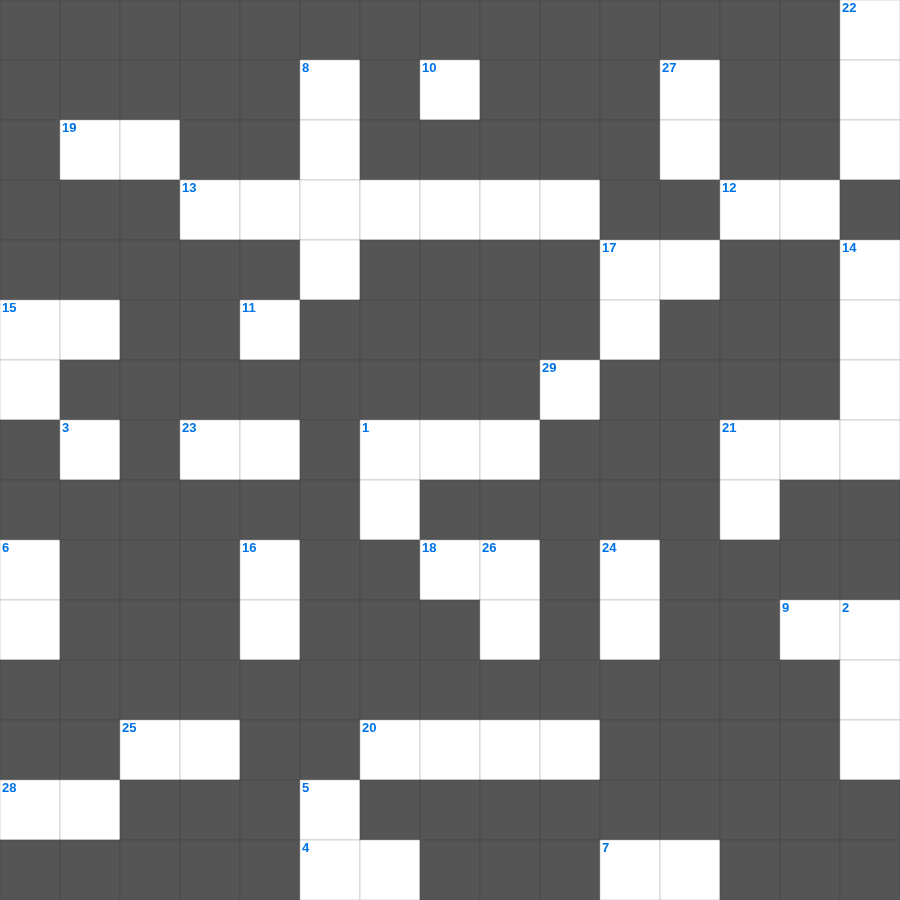

여호수아 마스터 100
📌 서비스 정의
십자가로세로는 교회 주보와 주일학교에서 사용할 수 있는 성경 기반 가로세로 퍼즐 서비스입니다. 성경 인물, 사건, 핵심 구절을 바탕으로 제작되었습니다. 온라인 풀이 및 인쇄 기능을 제공합니다.
📖 여호수아란?
여호수아는 모세의 후계자 여호수아가 이스라엘을 이끌어 가나안 땅을 정복하고 지파별로 땅을 나누는 과정을 기록합니다. 총 24장입니다.
📚 여호수아의 주요 사건·주제
요단강을 건넘 · 여리고성 함락 · 아이성 전투와 아간 사건 · 기브온 동맹과 해가 멈춘 전쟁 · 지파별 땅 분배
무료로 즐기는 여호수아 여호수아 성경퀴즈! 35개의 힌트로 구성된 가로세로 낱말 퍼즐입니다. PC와 모바일 모두 지원되며, 정답을 바로 확인할 수 있어 혼자서도 쉽게 풀 수 있습니다.

📝 가로 힌트
1. 죽은 나사로의 누이 중 예수께 '주께서 여기 계셨더라면 내 오라버니가 죽지 아니하였겠나이다'라고 먼저 말한 자
4. 유다서 1장 11절: 불의의 삯을 사랑한 구약 인물
4. 베드로후서 2장 15절: 브올의 아들로 불의의 삯을 사랑한 선지자
7. 이는 이것 날에 너희가 능히 대적하고 모든 일을 행한 후에 서기 위함이라
9. 우리가 지금은 거울로 보는 것 같이 이것하나 그때에는 얼굴과 얼굴을 대하여 볼 것이요
11. 멜리데 섬 사람들이 바울이 독사에 물리고도 죽지 않자 그를 누구라고 생각했나
12. 베드로후서 3장 17절: 무법한 자들의 이것에 이끌리지 말라
13. 바울이 갈라디아 인들을 위해 다시 이것 하는 해산의 수고를 하노라 함
15. 갈라디아서의 마지막 인사: 우리 주 예수 그리스도의 은혜가 너희 이것에 있을지어다
17. 나의 이것조차 조금도 귀한 것으로 여기지 아니하노라
18. 누구든지 이 교훈을 가지지 않고 너희에게 나아가거든 그를 집에 들이지도 말고 이것도 하지 말라
19. 미가서와 이사야서에 공통으로 등장하는 평화의 상징 (칼을 쳐서 이것으로)
20. 사도행전의 별칭 (성령의 역사를 기록했다 하여)
21. 그리스도 안에서 일만 스승이 있으되 이것은 많지 아니하니
23. 그날에는 여호와께서 천하의 왕이 되시리니 그날에는 여호와께서 이것 한 분이실 것이요
25. 바울이 오네시모를 돌려보낸 이유: 너로 하여금 그를 이것히 두게 함이라
28. 거룩함에 흠이 없게 하시기를 원하노라... 우리가 주 예수 안에서 너희에게 구하고 이것하노니
📝 세로 힌트
1. 시와 찬송과 신령한 노래들로 서로 화답하며 너희의 이것으로 주께 노래하며 찬송하며
1. 내가 주 안에서 유오디아를 권하고 순두게를 권하노니 주 안에서 같은 이것을 품으라
2. 하늘에 전쟁이 있으니 이 천사장과 그의 사자들이 용과 더불어 싸울새
3. 아내들이여 자기 남편에게 복종하기를 이것께 하듯 하라
5. 너희 중에 누가 다른 이와 더불어 일이 있는데 구태여 불의한 자들 앞에서 이것하느냐
6. 바울이 밀레도에서 에베소 교회 이것들을 불러 마지막 권면을 함
8. 초등교사(몽학선생)의 역할: 우리를 이것께로 인도하는 것
10. 아담 안에서 모든 사람이 죽은 것 같이 그리스도 안에서 모든 사람이 이것을 얻으리라
14. 어느 때나 하나님을 본 사람이 없으되 만일 우리가 서로 사랑하면 하나님이 우리 안에 거하시고 그의 사랑이 우리 안에 온전히 이것느니라
15. 바울이 벨릭스 앞에서 강론한 세 가지 주제: 의와 절제와 장차 오는 이것
16. 유다서 1장 19절: 이 사람들은 무엇을 일으키는 자인가
17. 태초부터 있는 이것의 말씀에 관하여는 우리가 들은 바요 눈으로 본 바요
21. 베드로의 고백: 주님 그러하나이다 내가 주님을 사랑하는 줄 주님께서 이것나이다
22. 자기의 십자가를 지시고 이것(히브리 말로 골고다)이라 하는 곳에 나가시니
24. 사도들이 채찍질 당하면서도 기뻐한 이유: 주를 위해 이것 받는 일에 합당한 자로 여겨짐
26. 빌레몬서에서 바울이 보인 태도: 명령보다 이것
27. 너희가 땅에서 사치하고 방종하여 이것의 날에 너희 마음을 살찌게 하였도다
29. 악에게 지지 말고 이것으로 악을 이기라
📖 함께 읽으면 좋은 성경사전
퍼즐을 풀기 전에 읽으면 힌트가 쉬워지고, 풀고 나서 읽으면 내용을 한 번 더 복습할 수 있습니다.
🧩 이 퍼즐에서 배우는 내용
이 퍼즐은 여호수아 마스터 100의 핵심 단어와 개념을 자연스럽게 복습할 수 있도록 구성되었습니다. 주일학교 수업이나 개인 성경공부에서 학습 내용을 점검하는 용도로 바로 활용할 수 있습니다.
🧑🏫 교회 교육 자료 활용
이 퍼즐은 주일학교 교재 추천 자료로 활용할 수 있고, 주일학교 주보에 넣기 좋은 분량으로 구성되어 있습니다. 수업용 주일학교 교안에 활동지로 붙이거나, 예배 후 복습용 주일학교 공과교재로 바로 사용할 수 있습니다.
🏷️ 키워드
여호수아 성경퀴즈, 여호수아, 십자가로세로, 성경퀴즈, 말씀퀴즈, 가로세로퍼즐, 주일학교 교재 추천, 주일학교 주보, 주일학교 교안, 주일학교 공과교재